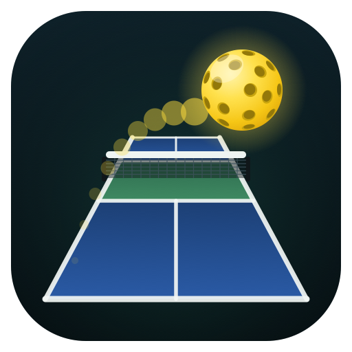
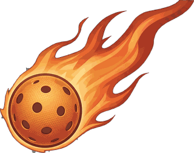
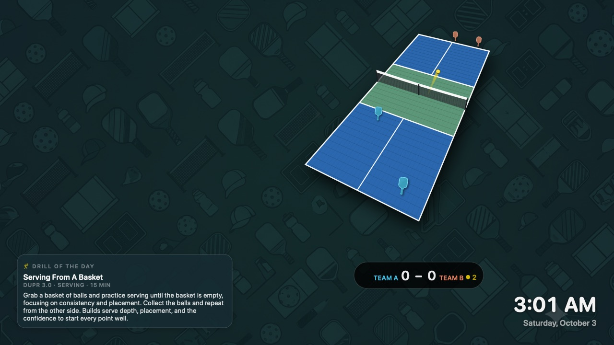
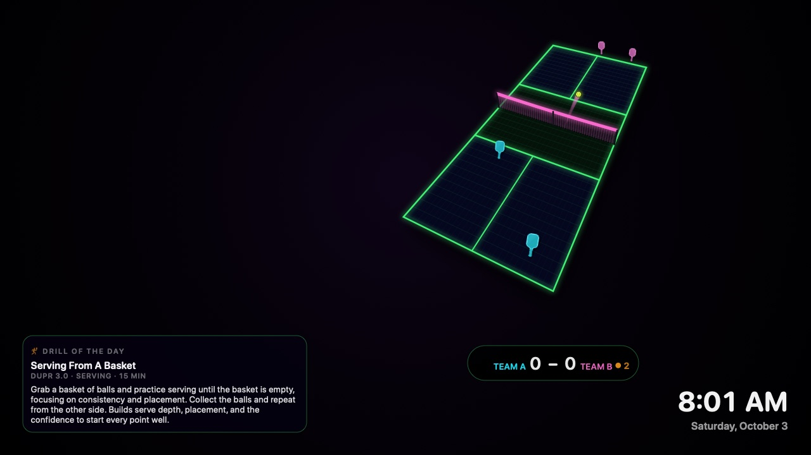
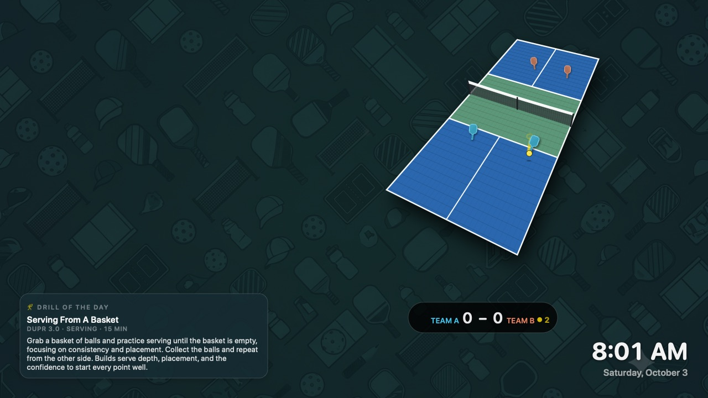
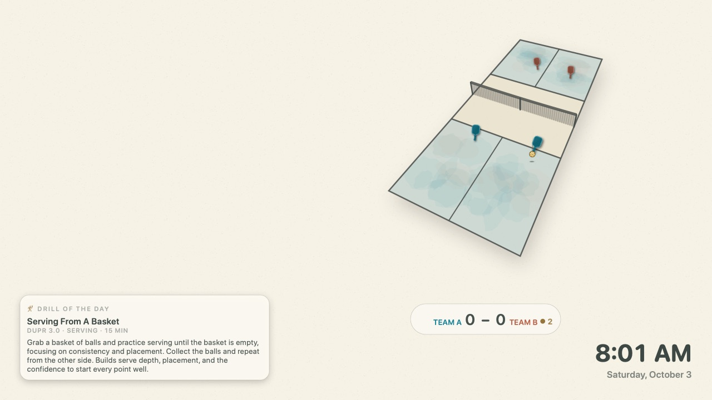
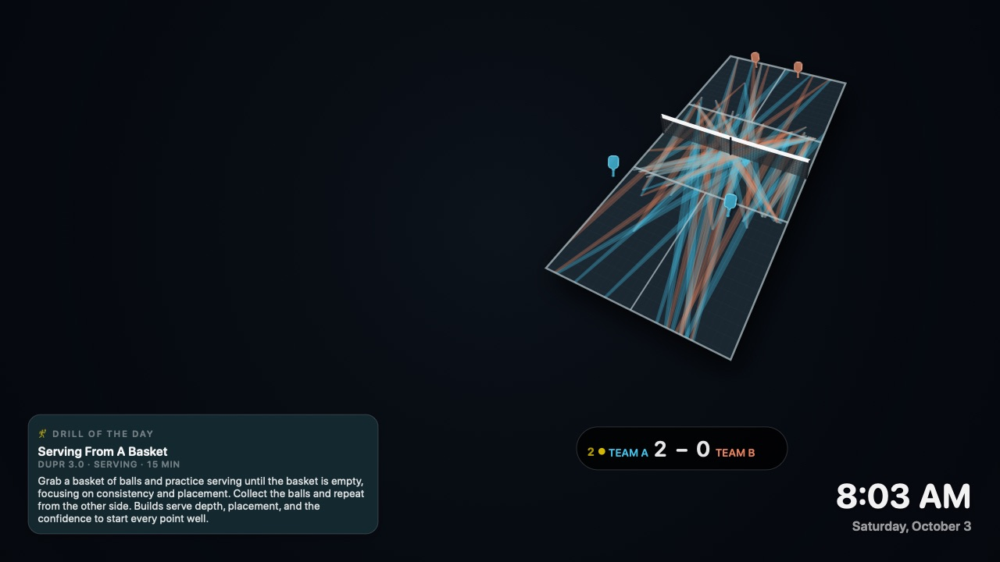

🏓
Animated rally
Regulation service courts, the two-bounce rule, kitchen play, and side-out scoring on a perspective court with a live scoreboard.
macOS screensaver
Five ways to watch pickleball on your Mac — from a classic court to watercolor paper and a painting made by the rally itself. Play singles or doubles, with weather, tournaments, and daily drills alongside.
Free & open source · Prefer the raw
.saver? Grab the zip.


Windows 11
Native ARM64 and x64 builds are part of the project, with MSI installers, portable ZIPs, and Classic/Black Light desktop theme packs. Check GitHub Releases for published Windows packages.
Windows builds are validation candidates, pending final desktop testing and signing approval. See the Windows build and acceptance guide before installing.
Regulation service courts, the two-bounce rule, kitchen play, and side-out scoring on a perspective court with a live scoreboard.
Doubles favors cross-court dinks and hands battles. Singles opens up passing shots and deeper recovery. Cyan Team A and coral Team B stay easy to follow.
Classic, Black Light, Living Court, Ink-and-paper, or Rally Painting. Pick one look in Options; every appearance plays the same game.
Live bounces make ripples. Paddle contacts make halos. Team-colored shot paths build a painting that gently dissolves at game end.
A slow 12-second turn each minute, the original 6-second spin, or no spin. macOS Reduce motion disables court spins and ambient effects.
The view gently eases back for high lobs. Court markings, shot trails, and team identities stay coherent as the scene rotates.
Current conditions and a “good day to play?” badge powered by Open-Meteo, no account required.
Upcoming events near supported US metros, refreshed automatically right from the saver.
A daily practice drill filtered by skill level, so the widget rail always has something useful to show.
Choose one appearance in System Settings → Screen Saver → Options…. These are actual renders from the screensaver, not mockups.

The familiar green-and-blue court, a yellow ball, and quiet pickleball wallpaper. Your original look is still here.

Neon lines, fluorescent equipment, and a pink ball trail against black. A brighter take on the same rally.

Soft ripples spread from live ball bounces, while paddle contacts leave brief team-colored halos. A subtle, reactive layer over Classic.

Warm paper grain, watercolor washes, charcoal lines, and an ink-like trail. Stable textures keep the sketchbook look calm, not jittery.

Every shot adds a translucent team-colored brushstroke. The painting builds across rallies, dissolves when a game ends, and fades older strokes during long games.
Click any screenshot for full size. The first four show the same rally moment; Rally Painting shows about 100 seconds of accumulated play. Captured with no-spin framing. Weather and tournament cards are optional and are not shown in these previews.
Open the DMG and launch the installer package inside.
The package installs for all users, so the macOS installer will ask for your administrator password.
Open System Settings → Screen Saver → PickleballScreensaver → Options… to choose Appearance, Singles or Doubles, court motion, and widgets. Click OK to save.
The latest release is signed and notarized for macOS 14+. If you want the source, screenshots, or issue tracker, the GitHub repo is one click away.